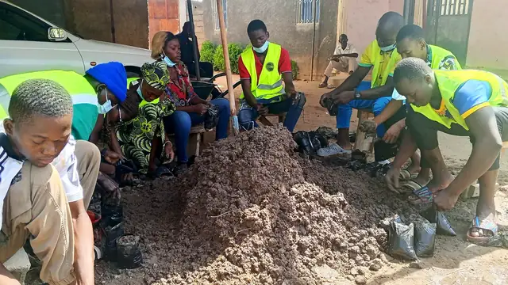

ClimatDe la pépinière à la colline
Nos volontaires préparent les plants, les remettent aux familles et les mettent en terre sur les terrains dégradés. La campagne 2026 s'est achevée avec les enfants de l'école coranique, sur le terrain de la grande mosquée. Les parrainages d'arbres permettent d'étendre chaque campagne.